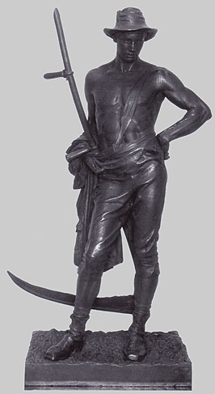

D'emblée, constatons que le moulage a son vocabulaire. Essayons de
faire le point a ce sujet dans le cadre d'une vision d'ensemble.
Le modèle
Tout commence avec le modèle original, inerte ou
vivant, sauf procédé particulier (voir ci-dessous). Certains le
nomment "positif", mais ce n'est pas une très bonne idée car cela
crée une confusion avec l'épreuve finale, alors que l'original peut lui-même
être une statue. Le terme de modèle est beaucoup
plus pertinent, d'autant plus qu'il s'agit parfois d'un véritable modèle
vivant. A ce sujet, rappelons que seule l'alginate
et quelques produits synthétiques spécifiques
permettent de prendre sans danger l'empreinte du vivant.
L'agent
de démoulage
Le modèle doit le plus souvent être enduit d'un agent liquide destiné à
faciliter ultérieurement le démoulage. Le rôle de cet "agent
de démoulage" est aussi parfois protecteur dans une certaine
mesure, s'il est choisi en adéquation d'une part avec le modèle, d'autre
part avec le matériau du futur moule. Il
s'agit souvent de vaseline, de savon liquide ou
d'eau savonneuse, de
terre humide (matériaux durs comme le ciment), d'huile (même usage), de talc
(gélatine, alginate), de graphite (métaux), parfois d'eau simple et
dans le cas des résines, le recours à un produit chimique spécifique peut être
nécessaire (on signale cependant l'emploi de cire et d'autres éléments plus
ou moins naturels pour différents procédés synthétiques).
Une enduction préalable de type "bouche-pore"
doit quelquefois être appliquée sur le modèle pour faciliter l'ensemble de
l'opération de moulage. Il peut s'agir, selon les cas, de gomme-laque, de
produits vinyliques, etc.
En préparation du coulage et du démoulage final (détaillés ci-dessous), un agent de démoulage est également utilisé. Ce n'est pas
forcément le même.
Il est conseillé de faire quelques essais et, dans certains
cas, de se documenter auprès d'enseignants ou de fabricants car le choix peut
être assez délicat. Il doit être adapté aux matériaux en présence.
En
principe, l'alginate, l'argile
et le Varaform ®
ne nécessitent pas d'agent de
démoulage spécifique,
mais la nature de ce qui doit être moulé peut quand même inciter à
prendre des précautions.
Le
moule, l'empreinte
Le moule peut être réalisé de différentes manières : trempage,
coulage, réchauffement (Varaform
®, gélatine, etc.), enduction à la brosse (plâtre liquide, barbotine, latex,
alginate) ou estampage.
Il est nommé "négatif" (voir
aussi dépouille ci-dessous). Il peut être :
* monobloc (donnant un positif sans
couture). Les exemples les plus courants sont le latex
ou l'élastomère silicone,
souvent utilisés pour réaliser un "moule-chaussette"
(type classique de "moule à peau", c'est-à-dire
de moule assez fin) renforcé par des
chapes retirables.
* fractionné ("coquilles" maintenues par des
chapes ou moule formant une masse, le modèle étant plongé dans un véritable
bain),
et, en même temps,
* élastique (latex, alginate)
* ou rigide (plâtre, barbotine,
résines diverses, etc.).
La liste des matériaux utilisables est très
longue, notamment à cause des procédés inventés dans le monde industriel
(pétrochimie, métallurgie, verrerie, etc.). Voir ci-dessous
La matière de l'outil principal : le moule.
La partie du moule qui a été mise en contact avec le modèle et a pris sa
forme est nommée "empreinte". C'est en quelque sorte le creux du
moule. Lorsque le moule est en plâtre, la couche interne est souvent colorée
de sorte à signaler la proximité du modèle lors des différentes opérations et
plus particulièrement si le moule doit être détruit après le coulage.
Une méthode de moulage dite "au fil",
assez typique du moulage au plâtre, permet de
créer deux pièces en une seule opération. Un fil solide et huilé est
simplement plaqué sur le modèle avant l'application du plâtre sur plusieurs
couches. Avant que le plâtre soit trop sec, on retire le fil de sorte à créer
une séparation, une fente. Cette technique est assez difficile à mettre en
oeuvre car la fente peut soit se refermer (plâtre trop frais), soit entraîner
des morceaux de moule (plâtre trop sec).
Deux, trois fils ou plus peuvent être utilisés pour créer quatre, six pièces
ou davantage - ce qui multiplie d'autant la difficulté de l'opération.
Il n'est pas exclu que le même procédé puisse être appliqué avec un autre
matériau de moulage "plastique" comme la terre ou la pâte à modeler. Pour tous
les matériaux, des essais préalables sont indispensables avec cette méthode.
Autre méthode, dite de la bande. Elle est
souvent employée. Cette fois, au lieu d'un fil sous-jacent, c'est un petit
muret (la bande) qui est élevé sur le modèle, à l'emplacement de la frontière
entre les futures coquilles (généralement au nombre de deux). La bande a
quelques centimètres de largeur pour une épaisseur assez faible. Elle peut
être faite de matériaux plastiques comme les terres ou la pâte à modeler, ou
bien de matières plus solides. De simples marques en creux (les
contre-clefs) sont creusées à intervalles réguliers sur un versant du
"muret", celui où l'on va appliquer du plâtre tout de suite après.
Le travail est effectué de proche en proche, si l'on peut dire.
Une première surface délimitée par la bande (surface qui peut représenter la
moitié de la surface à mouler) est couverte de plâtre par couches successives.
Puis, la bande est retirée, laissant apparaître des protubérances (les
clefs) moulées dans les creux des contre-clefs.
La surface encore intacte est à son tour couverte de plâtre, prenant, sur les
bords, l'empreinte des clefs. Lorsqu'elle est sèche, l'ensemble est en totale
cohésion.
Pour cette raison, le modèle doit être détruit (creux
perdu) sans quoi aucun démoulage n'est possible.
Maintien du
moule et premier démoulage
Lors du premier démoulage, du coulage ou du second démoulage, il n'est pas exclu que modèle soit
détruit. On parle alors de moulage à creux perdu, à opposer au
moulage à
bon creux. Le procédé à creux perdu autorise certaines libertés. Il
peut par exemple être appliqué à un modèle constitué de terre encore humide.
Certains matériaux de moulage comme le Varaform ®
ou la bande plâtrée permettent
un démoulage très simple, à l'aide d'une paire de ciseaux.
Quelle que soit la méthode employée, les différents éléments sont
d'abord rassemblés si
nécessaire sur le modèle car il est le plus souvent indispensable d'ajouter des pièces démontables,
dites "chapes" (éventuellement pourvues
de morceaux de métal ou de bois), à l'extérieur du moule de manière à ce
qu'il soit possible d'assembler et de maintenir de nouveau les éléments
ultérieurement. Ces pièces peuvent être maintenues à leur tour par des cordes,
des élastiques, etc. Lorsque le sculpteur est sûr de pouvoir reconstituer
aisément par la suite son puzzle en relief, il lui devient possible de démonter
les pièces, c'est-à-dire de démouler.
La
préparation
au coulage
Les pièces, enduites d'un agent de démoulage adapté, sont
assemblées à vide (sauf dans certains cas comme la cire perdue).
Différents orifices doivent être pratiqués (ils le sont
parfois lors d'une étape antérieure). Il faut généralement ménager un
trou de coulée (sauf forme ouverte
évidemment) et un ou plusieurs trous d'évacuation
(dits évents si c'est de l'air qui doit
être évacué).
Note 1 : il est parfois possible, avant le
coulage final, d'obtenir des effets de matière en plaçant certaines
substances plus ou moins granuleuses ou poudreuses dans l'agent de démoulage.
Des tests préalables sur des échantillons sont indispensables.
Note 2 : il n'était pas
rare, dans l'Antiquité, de faire cuire un moule réalisé par estampage
avec de la terre. Ce procédé a notamment l'avantage d'autoriser le
coulage de matériaux très divers. Il permet également de faire un nombre
important de copies sans altération du moule. Ce procédé un peu
contraignant mais puissant est toujours
d'actualité.
Note 3 :
il est possible de fabriquer un moule sans faire de moulage ! Par
exemple, tailler une forme creuse dans le bois, le plâtre ou tout autre
matière est une chose faisable.
Le
coulage et le démoulage final
Une matière liquide est coulée dans le moule.
Le séchage (ou la solidification) peut s'accompagner de différents
traitements thermiques ou électriques.
En ce qui concerne le coulage de plâtre, on distingue deux techniques :
* le coulage à la volée. C'est un coulage
simple (dans la théorie) qui s'opère d'une pièce.
* le coulage à l'imprimé. Destiné aux épreuves
grandes ou complexes, il s'effectue en plusieurs temps. Le fait de travailler
par étapes, par pièces, permet de disposer progressivement des renforts
(filasse, bois, métal, etc.) à l'intérieur de chaque pièce avant l'assemblage
final, qui s'opère dans la foulée par un nouveau coulage, pièces jointes.
Avec le plâtre, une barbotine ou certaine
autres matériaux, une épreuve creuse peut être réalisée en coulant
le long des parois. Le moule est souvent couché ("renversé")
et tourné progressivement
pour faciliter l'opération. Ce n'est pas quelque chose de facile !
Il est
souvent nécessaire d'agir mécaniquement pour évacuer les bulles d'air ou faire
entrer le plâtre dans les interstices.

Avec d'autres matériaux comme le bronze, par exemple, le recours à un
noyau central est nécessaire
pour réaliser des pièces volumineuses creuses. Même quand cela n'est pas
utile, il n'est pas rare de placer au dernier moment, dans le frais, non pas
un noyau mais une sorte de "bouchon" de forme régulière (typiquement un
parallélépipède, un cylindre ou une forme dérivée) qui pourra être retiré du
trou de coulée ou laissé en place de sorte à permettre un assemblage soit avec
une autre pièce de la sculpture, soit avec un socle.
Illustration : bronze de Harno Thornycroft, The mower, 1882-94.
Quel que soit le matériau coulé, vient le moment
émouvant du démoulage, qui permet de dégager ce que l'on nomme
la copie ou bien l'épreuve ou encore le "positif".
Cette étape
implique parfois la démolition du moule, de sorte qu'une seule copie peut être
créée. On parle alors de décochage.
Le travail n'est pas forcément terminé. Une finition est souvent
nécessaire pour éliminer les traces des jointures et autres imperfections.
La matière coulée dans le moule doit être compatible avec celle... du
moule. Plusieurs opérations peuvent donc être nécessaires pour créer le
négatif adapté à la substance finale recherchée.
Partant d'un véritable oeuf de poule, nous avons créé un oeuf de bronze.
Il existe maintenant un grand nombre de matériaux pouvant servir à
réaliser un moule. S'il est pratiquement impossible de tous les énumérer, on
peut citer deux catégories éternelles :
Entre les deux catégories, il existe assez peu d'intermédiaires. Quelques
produits synthétiques tels que le Varaform ® permettent de moduler la
souplesse en fonction du type de produit et du nombre de couches (lire
passage in Le Varaform ®).
Le matériau n'est pas la seule
contrainte. La forme en est une autre.
Il existe de nombreux cas où la rigidité du moule et la forme du modèle
imposent une pratique assez particulière.
Mais comment procéder lors du moulage ? C'est assez simple : il
faut commencer par réfléchir aux parties qui risquent de bloquer le retrait du
moule et de penser à
la forme optimale à donner aux fragments de moule et aux contre-dépouilles.
C'est un travail mental où l'expérience et l'astuce jouent un rôle : on parle de
"raisonner le moule".
Puis, il faut travailler en deux
temps, c'est-à-dire que l'on moule d'abord les contre-dépouilles et on les laisser sécher,
puis on moule la dépouille par-dessus l'ensemble.
Certains modèles présentant des formes complexes, des creux difficiles à
traiter sont dits "contre-dépouillés", manière de signaler
par avance
que l'emploi de contre-dépouilles risque d'être nécessaire. Les autres
modèles sont dits "de dépouille".